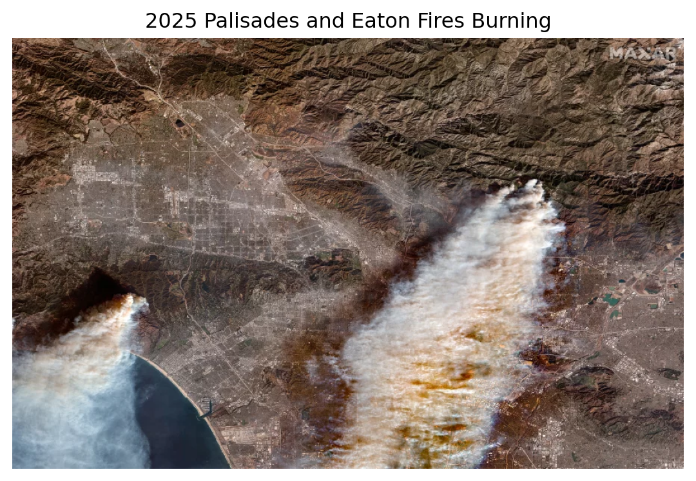
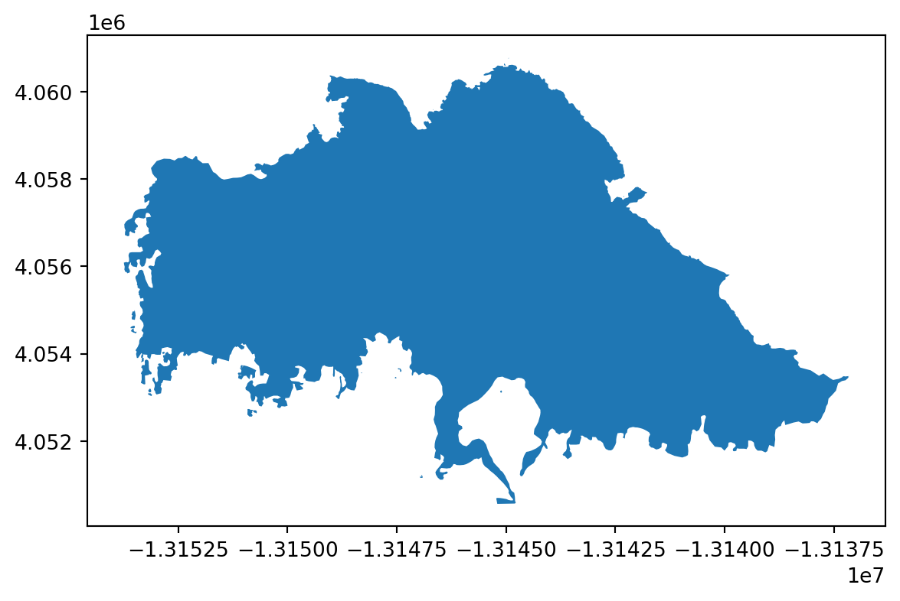
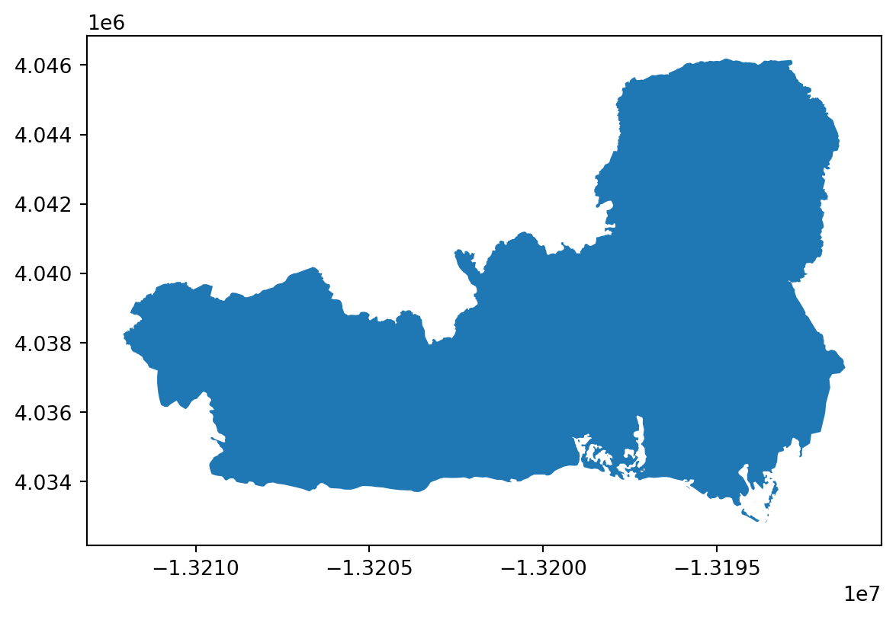
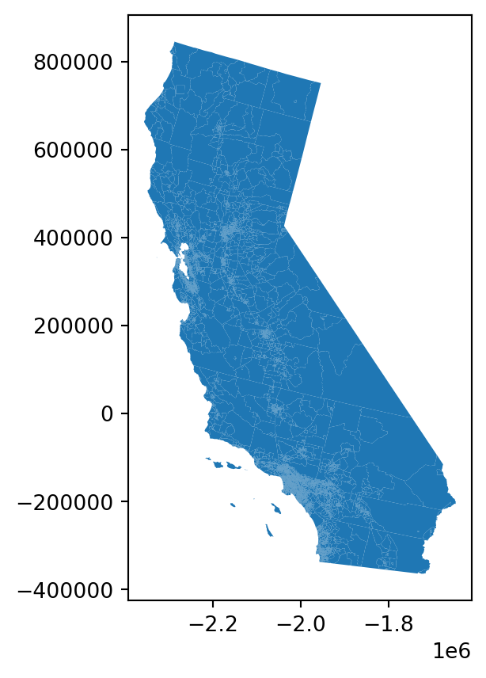
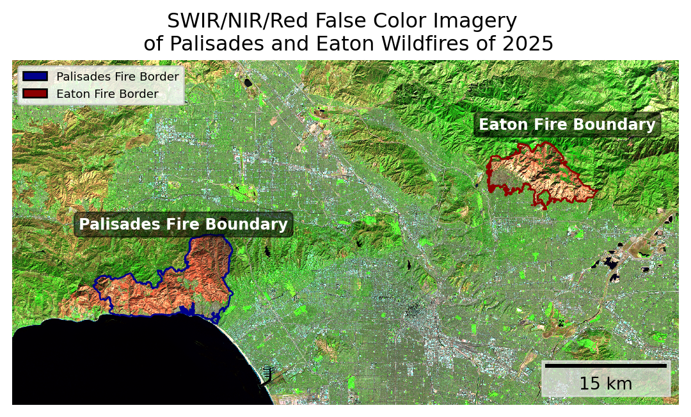
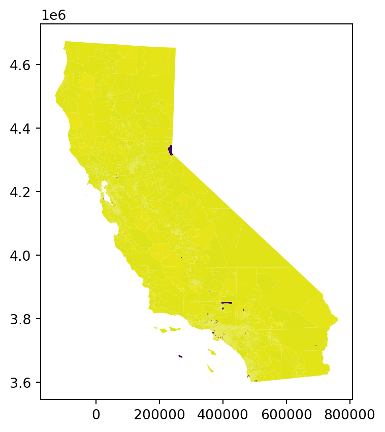
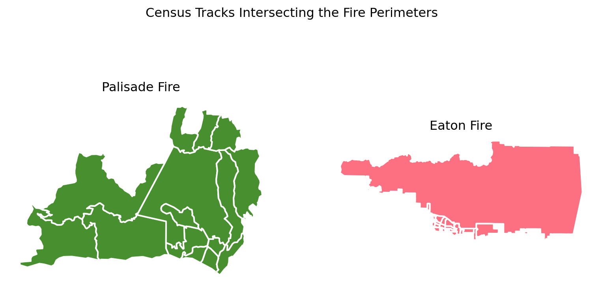
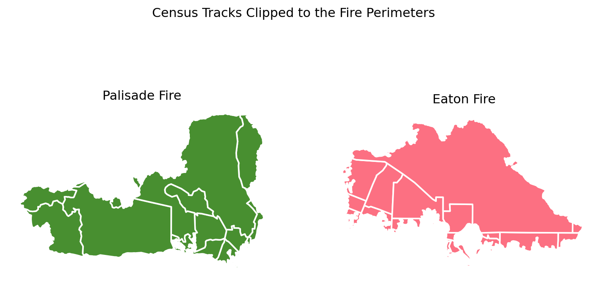
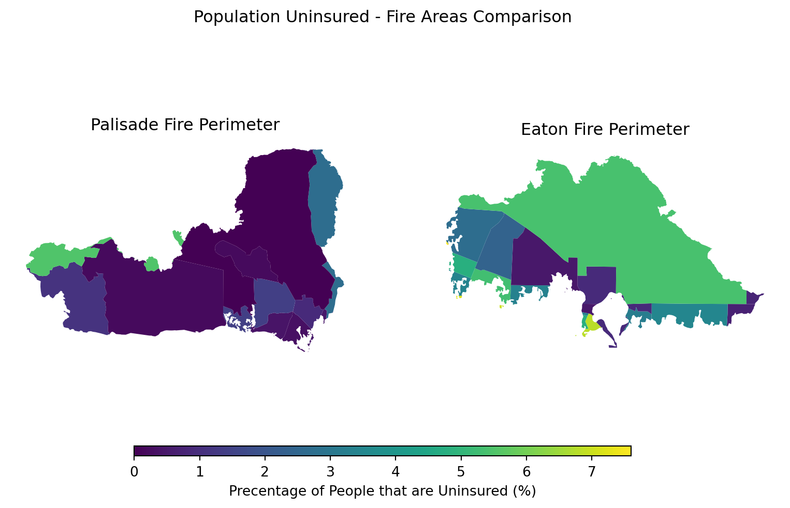

Manipulate, join, and clip vector data with geopandas.
Use true color imagery to understand Los Angeles landscape.
Use false color imagery to emphasize the burn markings from the 2025 Palisades and Eaton wildfires.
Create professional and informative plots.
Introductions
In January of 2025, Los Angeles, California faced two major wildfires: Palisades and Eaton. Both fires burned for 24 days (Cal Fire, 2025a & Cal Fire, 2025b). Eaton fire covered approximately 14,000 acres, while Palisades fire was nearly twice as large, destroying around 23,500 acres (Cal Fire, 2025a & Cal Fire, 2025b). Together, these long-lasting fires destroyed 16,251 structures, injured 13 people, and killed 31 civilians (Cal Fire, 2025a & Cal Fire, 2025b). The extensive devastation is clearly visible in the landscape, leaving behind massive fire scars from the burned vegetation.
In this project, we use satellite imagery to create true and false color visualization to inspect the burn damages. Additionally, we investigate the affected, uninsured populations using the Environmental Justice Index to understand the social and economic implications of these fires.
Datasets
Landsat 8 satellite record a collection of bands (red, green, blue, near-infrared and shortwave infrared) from the Landsat Collection 2 Level-2 atmospherically corrected surface reflectance data. Data was obtained from the Microsoft Planetary Computer data catalogue.
California’s Environmental Justice Index (EJI) is a collection of the demographics, environmental burdens, and health statistics for each census track in California. The EJI data is from the Geospatial Research, Analysis, and Service Program (GRASP).
Inital Steps
First, we must load all necessary libraries!
Code
# Used to import data easierimport os # Used for geospatial dataimport xarray as xr # Deals with rasters import geopandas as gpd # Deals with vector data # Used for making pretty maps import matplotlib.pyplot as pltfrom matplotlib_scalebar.scalebar import ScaleBarimport matplotlib.patches as mpatchesfrom matplotlib import image as mpimgimport contextily as ctxfrom IPython.display import Image # To nicely display images
The important libraries are the geopandas and xarrary. The geopandas package is useful when dealing with vector data which consists of point, lines, and polygons. Thus, we will use geopandas for the fire perimeters and EJI dataframes as they are polygons. Whereas, the xarrary package is useful when working with raster data, such as the Landsat data.
Secondly, we must load in the borders, Environmental Justice Index (EJI), and Landsat data by using the geopandas, xarrary, and os packages.
Code
# Importing fire border data # Eaton Fire Perimeter eaton = gpd.read_file(os.path.join('data', 'Eaton_Perimeter_20250121', 'Eaton_Perimeter_20250121.shp'))# Palisader Fire Perimeter pal = gpd.read_file(os.path.join('data', 'Palisades_Perimeter_20250121', 'Palisades_Perimeter_20250121.shp'))# Importing Califorina Environmental Justice Index data (EJI)cali = gpd.read_file(os.path.join('data', 'EJI_2024_California', 'EJI_2024_California.gdb'))# Importing Landsat Raster data landsat = xr.open_dataset(os.path.join('data', 'landsat8-2025-02-23-palisades-eaton.nc'))
Code
# Image of Fires plt.title("2025 Palisades and Eaton Fires Burning") # Image Title plt.axis('off') # No axis image = mpimg.imread("fires_burning.jpg") plt.imshow(image) # Display image plt.show()

Satelitte image of the Palisades and Eaton wildfires burning.
Image from Duster, 2025.
Data Exploration
Once the data is loaded, we need to examine each dataset.
The function .info provides information of the dataframes’ column names and data types. With this function, we notice there are 5 columns in the fire border dataset, with the final column being the vector geometry. We can examine the geometry of each fire with .plot.
Finally, it is always important to know the geospatial data’s coordinate reference systems (CRS). The CRS defines how the geospatial data is located and plotted. There are 2 CRS types: geographic (how the data is plotted on the 3D globe) and projected (how the data is plotted on a 2D map). It is important to use the correct CRS for your data and intended goal. Additionally, when merging or plotting geospatial data together, the datasets’ coordinate reference systems must match.
Code
# Border data exploration # .info: Column names, NA counts, and typesprint(eaton.info()) print(pal.info())# Print CRS print(f"The CRS for the easton fire perimeter is {eaton.crs}, and is the CRS projected? {eaton.crs.is_projected}")print(f"The CRS for the palisades fire perimeter is {pal.crs}, and is the CRS projected? {pal.crs.is_projected}")# Plotting eaton.plot()pal.plot()
<class 'geopandas.geodataframe.GeoDataFrame'>
RangeIndex: 20 entries, 0 to 19
Data columns (total 5 columns):
# Column Non-Null Count Dtype
--- ------ -------------- -----
0 OBJECTID 20 non-null int64
1 type 20 non-null object
2 Shape__Are 20 non-null float64
3 Shape__Len 20 non-null float64
4 geometry 20 non-null geometry
dtypes: float64(2), geometry(1), int64(1), object(1)
memory usage: 932.0+ bytes
None
<class 'geopandas.geodataframe.GeoDataFrame'>
RangeIndex: 21 entries, 0 to 20
Data columns (total 5 columns):
# Column Non-Null Count Dtype
--- ------ -------------- -----
0 OBJECTID 21 non-null int64
1 type 21 non-null object
2 Shape__Are 21 non-null float64
3 Shape__Len 21 non-null float64
4 geometry 21 non-null geometry
dtypes: float64(2), geometry(1), int64(1), object(1)
memory usage: 972.0+ bytes
None
The CRS for the easton fire perimeter is EPSG:3857, and is the CRS projected? True
The CRS for the palisades fire perimeter is EPSG:3857, and is the CRS projected? True


Code
# EJI exploration # .info: Column names, NA counts, and typesprint(cali.info()) # Print CRS print(f"The CRS for the Califoria's EJI data is {cali.crs}, and is the CRS projected? {cali.crs.is_projected}")# Plottingcali.plot()
<class 'geopandas.geodataframe.GeoDataFrame'>
RangeIndex: 9109 entries, 0 to 9108
Columns: 174 entries, OBJECTID to geometry
dtypes: float64(147), geometry(1), int64(15), object(11)
memory usage: 12.1+ MB
None
The CRS for the Califoria's EJI data is PROJCS["USA_Contiguous_Albers_Equal_Area_Conic",GEOGCS["NAD83",DATUM["North_American_Datum_1983",SPHEROID["GRS 1980",6378137,298.257222101,AUTHORITY["EPSG","7019"]],AUTHORITY["EPSG","6269"]],PRIMEM["Greenwich",0,AUTHORITY["EPSG","8901"]],UNIT["degree",0.0174532925199433,AUTHORITY["EPSG","9122"]],AUTHORITY["EPSG","4269"]],PROJECTION["Albers_Conic_Equal_Area"],PARAMETER["latitude_of_center",37.5],PARAMETER["longitude_of_center",-96],PARAMETER["standard_parallel_1",29.5],PARAMETER["standard_parallel_2",45.5],PARAMETER["false_easting",0],PARAMETER["false_northing",0],UNIT["metre",1,AUTHORITY["EPSG","9001"]],AXIS["Easting",EAST],AXIS["Northing",NORTH],AUTHORITY["ESRI","102003"]], and is the CRS projected? True

Unlike the geopanda vector data, the raster datatype is a xarray. Xarrays have 3 components:
Variables: The measurements
Dimensions: Describe the axes of the array (coordinates, time)
Attributes: The units and other describing factors (like sample ID)
We can understand the Landsat’s variables, dimension, and CRS with the .var, .coord, dims, and .rio.crs functions.
Code
# Preliminary Raster Landsat data exploration print(f"THE COORDINATES ARE: {landsat.coords}")print(f"THE VARIABLES ARE: {landsat.var}")print(f"THE DIMENSIONS ARE: {landsat.dims}")print(f"THE CRS IS: {landsat.rio.crs}")
THE COORDINATES ARE: Coordinates:
* y (y) float64 11kB 3.799e+06 3.799e+06 ... 3.757e+06 3.757e+06
* x (x) float64 22kB 3.344e+05 3.344e+05 ... 4.166e+05 4.166e+05
time datetime64[ns] 8B ...
THE VARIABLES ARE: <bound method DatasetAggregations.var of <xarray.Dataset> Size: 78MB
Dimensions: (y: 1418, x: 2742)
Coordinates:
* y (y) float64 11kB 3.799e+06 3.799e+06 ... 3.757e+06 3.757e+06
* x (x) float64 22kB 3.344e+05 3.344e+05 ... 4.166e+05 4.166e+05
time datetime64[ns] 8B ...
Data variables:
red (y, x) float32 16MB ...
green (y, x) float32 16MB ...
blue (y, x) float32 16MB ...
nir08 (y, x) float32 16MB ...
swir22 (y, x) float32 16MB ...
spatial_ref int64 8B ...>
THE DIMENSIONS ARE: FrozenMappingWarningOnValuesAccess({'y': 1418, 'x': 2742})
THE CRS IS: None
Data Wrangling
a) Restoring Geospatial Information
PROBLEM! Notice, the Landsat’s CRS reads ‘None’!
This is because the raster’s CRS is located in another attribute called ‘crs_wkt’. Therefore, we must retrieve the CRS by using .spatial_ref (which refers to the Spatial Reference System). Then, we will use .write_crs to recover the spatial properties of the dataset.
# Find the CRS within the 'crs_wkt' attribute landsat_crs = landsat.spatial_ref.crs_wkt# Recover the geospatial info landsat.rio.write_crs(landsat_crs, inplace =True) # Print CRS... all better! print(landsat.rio.crs)
EPSG:32611
b) Coordindate Refereces Systems
As stated before, when plotting or merging geospatial dataframes, it is imparative they have the same CRS. Therefore, we need to check if all datasets’ coordinate reference systems match. If they are not the same, they need to be transformed.
Code
# Check is CRSs match print(f"Does the Eaton and Palisades borders CRSs match? {eaton.crs == pal.crs}")print(f"Does the Eaton border and Landsat raster CRSs match? {eaton.crs == landsat.rio.crs}")print(f"Does the Cali EJI and the Eaton border CRSs match? {eaton.crs == cali.crs}")print(f"Does the Cali EJI and the Landsat raster CRSs match? {landsat.rio.crs == cali.crs}")
Does the Eaton and Palisades borders CRSs match? True
Does the Eaton border and Landsat raster CRSs match? False
Does the Cali EJI and the Eaton border CRSs match? False
Does the Cali EJI and the Landsat raster CRSs match? False
PROBLEM! The perimeter, Landsat, and EJI CRSs do NOT match! Thus, they must be transformed using to_crs. We will change all datasets to match Landsat’s CRS.
# Transform all data sets to match the Landsat's CRS eaton.to_crs(landsat.rio.crs, inplace =True)pal.to_crs(landsat.rio.crs, inplace =True)cali.to_crs(landsat.rio.crs, inplace =True)
Code
# Check to see if CRS are fixed print(f"Does the Eaton border and Landsat raster CRSs match? {eaton.crs == landsat.rio.crs}")print(f"Does the Cali EJI and the Eaton border CRSs match? {eaton.crs == cali.crs}")print(f"Does the Cali EJI and the Landsat raster CRSs match? {landsat.rio.crs == cali.crs}")
Does the Eaton border and Landsat raster CRSs match? True
Does the Cali EJI and the Eaton border CRSs match? True
Does the Cali EJI and the Landsat raster CRSs match? True
Now all CRSs match, and we can move on!
True Color Imagery
True color imagery will be used to visualize the Los Angeles landscape!
When mapping, there are 3 color channels: red, green, blue (RGB). If the red, green, and blue Landsat wavelengths are assigned to their proper channels, this is TRUE COLOR IMAGERY. True color imagery, in simple terms, is when the red wavelength is assigned to red channel, green wavelength is assigned to the green channel, and blue wavelength is assigned to the blue channel.
To create the true color imagery, we will select the ‘red’, ‘green’, and ‘blue’ bands (in that order) into the Landsat’s [red-channel, green-channel, and blue-channel]. Then, we convert the dataset (with multiple bands) into a single DataArray with to_array(). There are a couple spots with ‘NA’ values and extreme measurements (from cloud cover and/or shadows). The NAs and outlier values will cause the visualizion to fail, not showing the intended image. Filling the NA values with 0s, using .fillna(0), ensures the RGB image will plot cleanly. The function .plot.imshow() is xarray’s plotting function. The addition of robust = True eliminates extreme outliers, and thus scales the color range to be more representative of the data.
Code
# Plot Landsat data with the red, green, blue wavelengths(landsat[['red', 'green', 'blue']] .to_array() # Convert to a single DataArray .fillna(0) # Convert nan values to 0 .plot.imshow(robust =True)) # Plot and remove outliers
False Color Imagery
Conversely, FALSE COLOR IMAGERY is when the RGB channels are NOT assigned to the red, green, blue wavelengths. False color imagery uses the unique reflectance and absorbance properties of different wavelengths to enhance or isolate specific features that may be difficult to see in true color imagery.
For instance, to examine the fire scars, we will assign the short-wave infrared wavelengths (‘swir22’) to the red channel, near-infrared wavelengths (‘nir08’) to the green channel, and red wavelength to the blue channel. Near infrared (NIR) wavelengths reflects healthy vegetation. Lower NIR measurements can show unhealthy plant-life conditions, such as drought, stress, or deforestation. Assigning the NIR to the green channel emphasizes the vegetation health. Hence, super green areas in this figure represent healthy plant-life. Short wave infrared (SWIR) wavelengths reflects fire and recently burned areas. By assigning SWIR to the red channel, the fire markings are highlighted with a red color, especially in contrast to the NIR (green channel). Thus, false color imagery is used to emphasizes the burn damages from the fires in comparison to the neighboring healthy vegetation.
Code
# Plotting Landsat data with the short-wave infrared (swir22), near-infrared, and red wavelengths # RGB raster (landsat[['swir22', 'nir08', 'red']] .to_array() # Convert to a single DataArray .fillna(0) # Convert nan values to 0 .plot.imshow(robust =True)) # Plot and remove outliars

All together!
To finalize the plot, we will outline the fire scars with the perimeter dataframes. Additionally, adding legends, text, a title, and a scalebar are important factors in creating a professional map.
Code
# Create an empty plot fig, ax = plt.subplots()# No axisesax.axis('off')# Lasndat's false -color RGB raster (landsat[['swir22', 'nir08', 'red']] # False color imagery .to_array() # Convert to a single DataArray .fillna(0) # Convert nan values to 0 .plot.imshow(ax = ax, robust =True)) # Plot and remove outliers # Fire borders eaton.plot(ax = ax, color ='none', edgecolor ='darkred')pal.plot(ax = ax, color ='none', edgecolor ='darkblue')# Add title ax.set_title('SWIR/NIR/Red False Color Imagery \n of Palisades and Eaton Wildfires of 2025')# Add labels ax.text(.1, .56, 'Palisades Fire Boundary', transform = ax.transAxes, # controls the position fontsize =9, color ='white', fontweight ='semibold', bbox =dict(boxstyle ='round', facecolor ="black", alpha=0.5) )ax.text(.70, .80, 'Eaton Fire Boundary', transform = ax.transAxes, # controls the position fontsize =9, color ='white', fontweight ='semibold', bbox =dict(boxstyle ='round', facecolor ="black", alpha=0.5) )# Legend pal_legend = mpatches.Patch(facecolor ="darkblue", edgecolor ="black", label ="Palisades Fire Border")easton_legend = mpatches.Patch(facecolor ="darkred", edgecolor ="black", label ="Eaton Fire Border")ax.legend(handles = [pal_legend, easton_legend], loc ='upper left', fontsize ='x-small')# Scalebarax.add_artist(ScaleBar(1, location ='lower right', box_color="0.9", border_pad =0.5, box_alpha =0.7))# Show the plot plt.show()

Uninsured Population Effected by the Eaton and Palisades Fires
Natural disasters negatively impact everyone involved. However, uninsured communities are exteremely vulnerable as the catastrophes can cause severe financial loss and strain public resources.
To investigate the impact of the Eaton and Paslisades fires on uninsured communities, we will use California’s Environmental Justice Index (EJI) ‘E_UNINSUR’ variable. First, we must clip the EJI dataset to the fire perimeters. Then, assess the uninsured community by plotting the census tract’s ‘E_UNINSUR’ measurements for each fire.
Prelimary Exploration
To examine California’s census tracks (especially the ones that intersect with the fire perimeters), we will create a map! In order to do this, we will select and filter for all GEOIDs that cut across the Eaton and Paslisade Fires, and highlight these when plotting California’s EJI data.
Code
# Select GEOID within the fires perimeters highlighted_ids_eaton = ['06037461501', '06037460900', '06037461100', '06037461000', '06037460302', '06037460200', '06037460301', '06037460401', '06037430400', '06037462500', '06037460002', '06037430501', '06037461300', '06037460001', '06037461200', '06037460101', '06037930400', '06037430301']highlighted_ids_pal =['06037262301', '06037262802','06037262706','06037262704','06037262501','06037262604','06037800504','06037800506','06037262601','06037262400','06037980019','06037800104','06037139704','06037139703','06037139802']# Filter cali EJI data for the selected GEOIDshighlight_eaton = cali[cali['GEOID'].isin(highlighted_ids_eaton)]highlight_pal = cali[cali['GEOID'].isin(highlighted_ids_pal)]# Plotting the Cali EJI counties fig, ax = plt.subplots(1, 1, figsize=(14, 12))ax.axis('off') # No axis # Plot cali.plot(ax = ax, facecolor='lightgrey', edgecolor='white', linewidth=0.5) # Cali CTshighlight_eaton.plot(ax=ax, facecolor='#fc7082') # CTs intersecting with eaton fire highlight_pal.plot(ax=ax, facecolor='#488f30') # CTs intersecting with Palisade fire # Create and then add legendsLegend_name1 = mpatches.Patch(facecolor ="#fc7082", edgecolor ="black", label ="CTs transversing the Eaton Fire")Legend_name2 = mpatches.Patch(facecolor ="#488f30", edgecolor ="black", label ="CTs transversing the Palisade Fire")ax.legend(handles = [Legend_name1, Legend_name2], loc ='upper right', fontsize ='large')# Add Title ax.set_title("All California Census Tracks (CT),\nHighlighting the Ones Intersecting the Eaton and Palisade Fires")plt.show()
The figure above shows the intersecting census tracks. To get better view of these ‘blobs’, we can use .sjoin() to select for all CTs that traverse the fires and then plot.
# JOIN EJI census tracks with border data eaton_join = gpd.sjoin(cali, eaton)pal_join = gpd.sjoin(cali, pal)
Code
# Plot joined df fig, (ax1, ax2) = plt.subplots(1, 2, figsize=(10, 5))pal_join.plot(ax = ax1, facecolor='#488f30', edgecolor='white', linewidth=1.5)eaton_join.plot(ax = ax2, facecolor='#fc7082', edgecolor='white', linewidth=1.5)fig.suptitle('Census Tracks Intersecting the Fire Perimeters')ax1.set_title("Palisade Fire")ax2.set_title("Eaton Fire")ax1.axis('off')ax2.axis('off')plt.show()

Clip Census Tracks with Fire Perimeters
The .clip() function acts like a cookie cutter. We will use this function to ‘cookie-cutter’ out the exact fire perimeters from the census tracks.
# Clip EJI census tracks with border data eaton_clip = gpd.clip(cali, eaton)pal_clip = gpd.clip(cali, pal)
Code
# Plot clipped dfs fig, (ax1, ax2) = plt.subplots(1, 2, figsize=(10, 5))pal_clip.plot(ax = ax1, facecolor='#488f30', edgecolor='white', linewidth=1.5)eaton_clip.plot(ax = ax2, facecolor='#fc7082', edgecolor='white', linewidth=1.5)fig.suptitle('Census Tracks Clipped to the Fire Perimeters')ax1.set_title("Palisade Fire")ax2.set_title("Eaton Fire")ax1.axis('off')ax2.axis('off')plt.show()

Plotting the Uninsured Variable
To study the affected community, we will use the clipped dataframes and display the census tracks’ ‘E_UNINSUR’ measurements.
Code
fig, (ax1, ax2) = plt.subplots(1, 2, figsize=(10, 5))# Picking out the population uninsured measurement within the EJI dataframe eji_variable ='E_UNINSUR'# Find common min/max for legend rangevmin =min(pal_clip[eji_variable].min(), eaton_clip[eji_variable].min())vmax =max(pal_clip[eji_variable].max(), eaton_clip[eji_variable].max())# Plot census tracts within Palisades perimeter ------pal_clip.plot( column= eji_variable, vmin=vmin, vmax=vmax, legend=False, ax=ax1,)ax1.set_title('Palisade Fire Perimeter')ax1.axis('off')# Plot census tracts within Eaton perimeter ------ eaton_clip.plot( column=eji_variable, vmin=vmin, vmax=vmax, legend=False, ax=ax2,)ax2.set_title('Eaton Fire Perimeter')ax2.axis('off')#------# Add overall titlefig.suptitle('Population Uninsured - Fire Areas Comparison')# Add shared colorbar at the bottomsm = plt.cm.ScalarMappable( norm=plt.Normalize(vmin=vmin, vmax=vmax))cbar_ax = fig.add_axes([0.25, 0.08, 0.5, 0.02]) # [left, bottom, width, height]cbar = fig.colorbar(sm, cax=cbar_ax, orientation='horizontal')cbar.set_label('Precentage of People that are Uninsured (%)')plt.show()

The Palisade Fire primarily affected the Pacific Palisades, a region located around the Pacific Ocean’s water edge and widely recognized for its affluence and wealth (City of Los Angeles, n.d.). In contrast, the Eaton fire devestated the Altadena neighborhood, a community with a historically Black population (Ong et al., n.d.). Altadena faces financial and environmental pressures, including rising home prices and climate-related disasters, which have caused a decline in young Black homeowners in the region (Ong et al., n.d.).
The figure above highlights the disparities between these communities’ social vulnerability and fire impacts. While both areas exhibit relatively low percentages of uninsured residents, the Eaton fire area (located further from the waters edge with greater historical minorities percentages) shows a higher concentraion of households affected by the disaster without adequate insurance coverage. This discrepancy displays how vulnerabilities play into the communities ability to recover from catastrophic events.
City of Los Angeles. (n.d.). Pacific Palisades. TRACI Park. https://cd11.lacity.gov/neighborhoods/pacific-palisades
County of Los Angeles. (January 21, 2025). Palisades and Eaton Dissolved Fire Perimeters (2025). AcrGIS Online. Accessed Nov 28, 2025. https://egis-lacounty.hub.arcgis.com/maps/ad51845ea5fb4eb483bc2a7c38b2370c/about
Centers for Disease Control and Prevention and Agency for Toxic Substances Disease Registry. (2024). Environmental Justice Index. Geospatial Research, Analysis, and Service Program (GRASP). Accessed Nov 28, 2025. https://atsdr.cdc.gov/place-health/php/eji/eji-data-download.html
Duster, C. (2025). Photos: See the California wildfires’ destructive force, in satellite images. npr. Accessed Dec 9, 2025. https://www.npr.org/2025/01/09/nx-s1-5254109/california-wildfires-palisades-eaton-before-after-satellite-images
Microsoft. (2025). Landsat Collection 2 Level-2. Microsoft Planetary Computer. Accessed Dec 2, 2025. https://planetarycomputer.microsoft.com/dataset/landsat-c2-l2#overview
Ong P., Pech C., Frasure L., Comandur S., Lee E., and González S. (n.d.). LA Wildfires: Impacts on Altadena’s Black Community University of California, Los Angeles Ralph J. Bunche Center. Accessed Nov 28, 2025. https://bunchecenter.uclaRJC.edu/wildfires-altadena-black-community/
The California Department of Forestry and Fire Protection (Cal Fire). (2025a). Eaton Fire. Accessed Dec 2, 2025. https://www.fire.ca.gov/incidents/2025/1/7/eaton-fire
The California Department of Forestry and Fire Protection (Cal Fire). (2025b). Palisades Fire. Accessed Dec 2, 2025. https://www.fire.ca.gov/incidents/2025/1/7/palisades-fire
Citation
BibTeX citation:
@online{hessel2025,
author = {Hessel, Megan},
title = {Analyzing {Eaton} and {Palisades} {Fire} {Scars}},
date = {2025-12-04},
url = {https//meganhessel.github.io/Posts/analyzing_LA_fire_scars},
langid = {en}
}